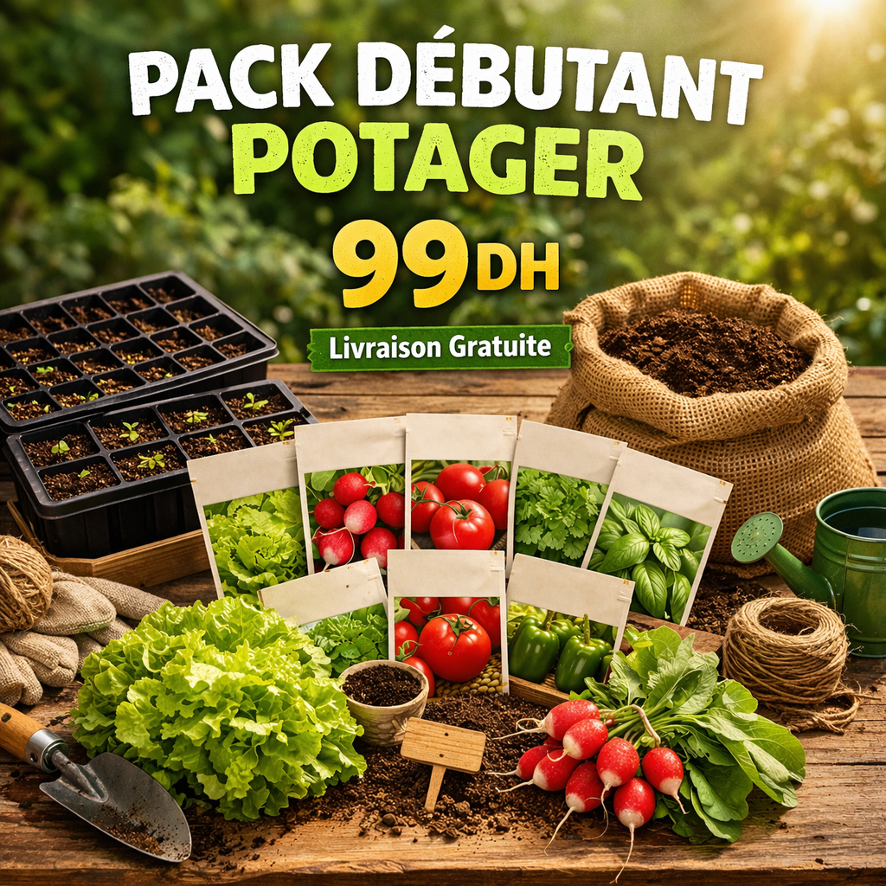
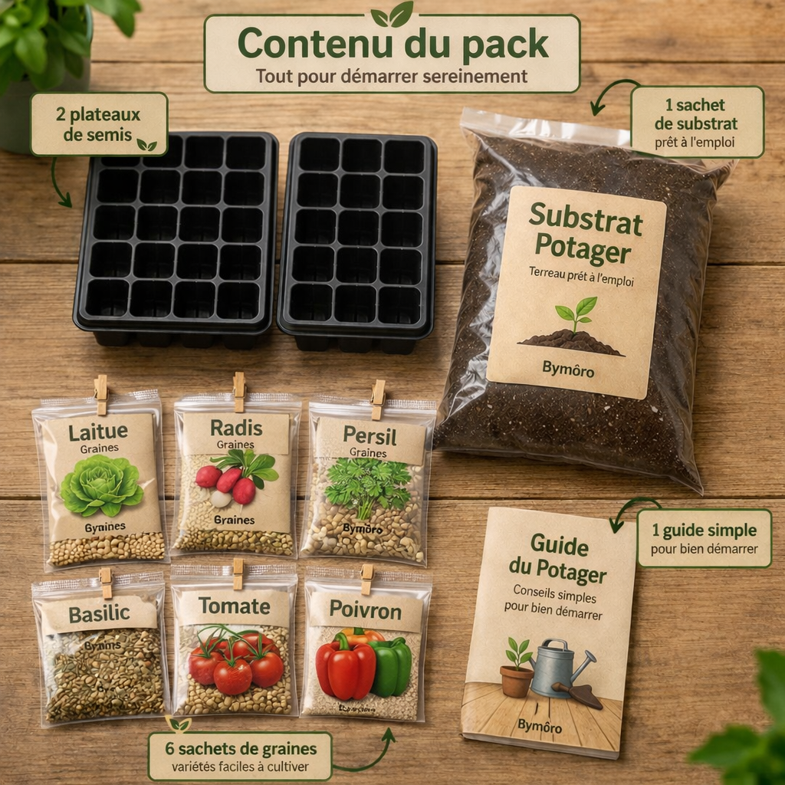
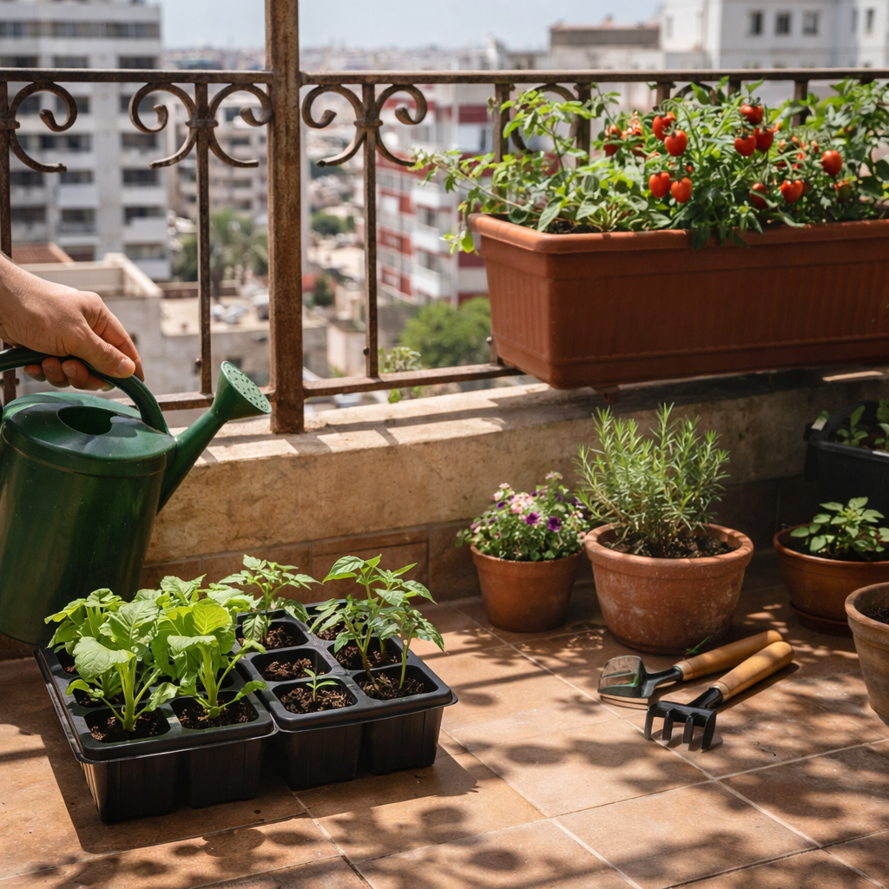
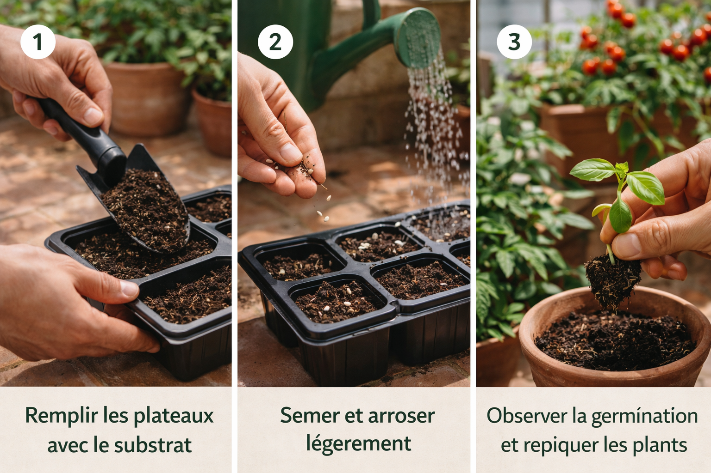
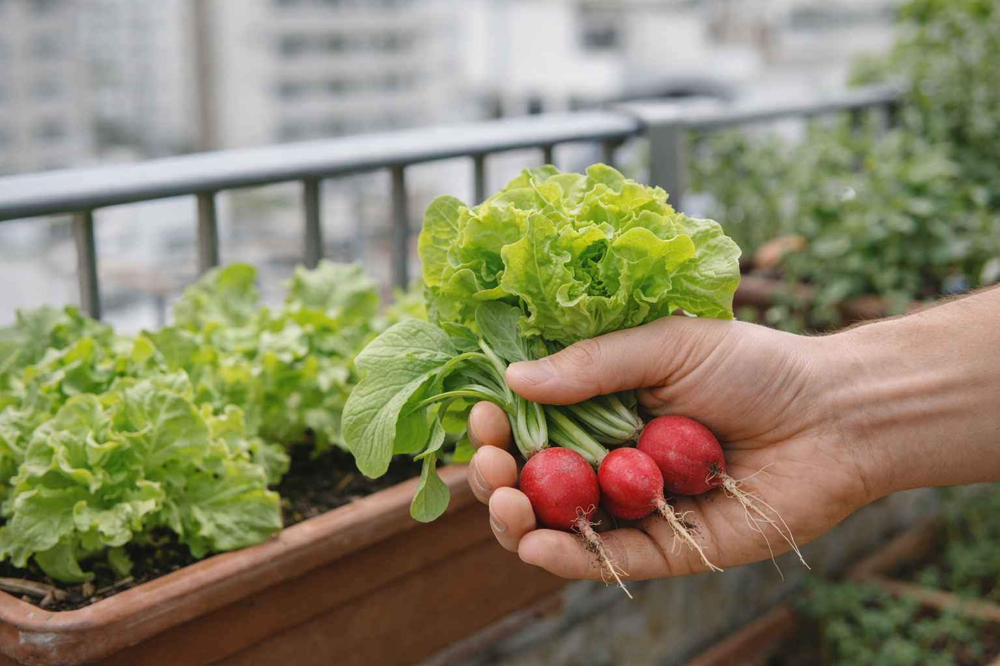

Tout pour démarrer facilement son potager à la maison
Un pack simple pour commencer sur balcon, terrasse ou petit espace, sans expérience préalable.
Commander sur WhatsApp
Un kit simple, clair et pensé pour bien commencer.

Ce pack est parfait pour :

Trois étapes simples pour commencer rapidement.

Le pack est pensé pour aider à commencer facilement, étape par étape, sans se compliquer.

Un message suffit pour commander votre pack.
Pack potager débutant • kit semis Maroc • potager maison Casablanca • semis balcon terrasse • jardinage débutant Maroc